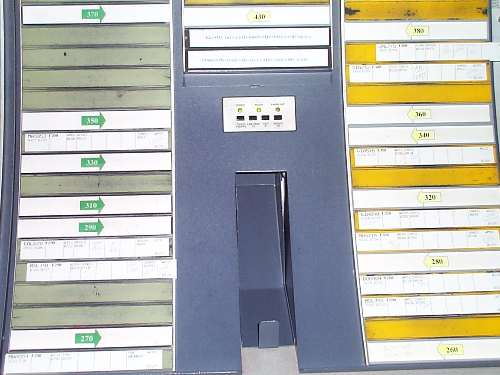

The Board That Was the Airspace
In air traffic control, the flight progress strip was never the whole interface. The board it sat in was — a rack where a strip's height meant an altitude, its bay meant a state of flight, its tilt meant 'look here', and the colour of the ink meant who was speaking. A note on data that lives in arrangement, and the word 'handoff' that outlived the paper it was made of.

Usually, when I write about an interface, the meaning lives in the object: a keycap's letter, a punch card's holes, a phosphor pixel that is lit or dark. Even the Epson HX-20, which printed its answer into your hand, kept the data inside the machine and handed you a volatile copy.
The air traffic control flight progress strip breaks that habit in a way I find hard to get used to. The strip is a small rectangle of paper, printed with one flight's callsign, route, altitude, and times. Alone, it is a note. It only becomes a record of airspace when you put it in a rack.
The board is the interface
A strip board is a shallow frame with slots and rails. Controllers slide the strips in edge-on, and immediately the board imposes a second layer of meaning that was never printed on any strip.
In area and approach control, the strips are stacked in altitude order. Flight at 33,000 feet sits above 31,000, which sits above 29,000. A controller scanning the board does not read sixty strips; they read a shape. The distance between two strips is separation. A gap is empty altitude. If a strip has drifted to the wrong rung of the ladder, that is a problem you can see from across the room before you have read a single word of it.
Tower controllers do something different with the same physical system. Their bays are stages of flight: ground, runway, air. A strip moves from one bay to the next as the aircraft it describes moves through procedure, waiting at the gate, taxiing, cleared, rolling, gone. The physical motion of the paper is the state change. Nobody types "status: departing." They slide a card two inches and the whole room knows.
This is rare in the museum. Nearly every other exhibit encodes data in a thing — marks on a surface, charges in a cell, holes in a card. Here the primary channel is where. The strip's address on the board is data, its neighbours are data, and most of that meaning evaporates the moment you pull the strip out to read it. The interface does not travel with the object; it lives in the space between objects.
The US Federal Aviation Administration codified the practice (FAAO 7110.65), but nobody invented it on a whiteboard. It grew out of the work, which is why a strip in a museum case is only half an artifact. The other half was wall-mounted, and human.
Tilt, and the colour of a voice
Two more channels were built into the practice, and neither has a clean digital equivalent.
The first is tilt. A strip can be "cocked out" — rotated a few degrees out of alignment with its neighbours. It is not a formal status; it means something like check this one, a private bookmark or a flag for whoever sits down next. It costs nothing: a wrist, a slight diagonal. A computer can draw a red triangle on a tile, but marking it is louder — a menu, a tap, a mode. The cocked strip is a physical interrupt that produces no log entry, which is why controllers liked it and probably why regulators eventually wouldn't.
The second is ink. Printed strips carried the filed plan; then controllers and assistants added what actually happened in coloured pens, and the colour encoded who was writing — assistant, planner, or the controller who cleared the turn. A strip is not a document that gets overwritten. It is an append-only conversation whose authorship is legible at a glance. A surprisingly good audit trail, arrived at by accident, with a pen.
I used to think the most interesting thing about paper was that it worked offline. True, and the reason the strips survived. But the deeper lesson is that paper makes annotating a colleague's work nearly free, and lets annotations stack instead of replacing each other. Cheap, additive, attributable — you can buy all three in software now. It took a long time to figure out how.
The word that outlived the thing
The transfer of an aircraft from one controller to another is called a handoff. Every system that passes responsibility today — a sector handoff in flight management, a handoff between automated lanes in a factory, a handoff from a chatbot to a human agent — uses the word.
It is not a metaphor. One controller handed the paper strip to the next, and with it the responsibility for the aircraft. In some towers the ground controller hands the strip to the local controller as the aircraft reaches the runway; in others it went down a chute to the departure radar room below. The transfer of a procedure was the transfer of a token you could hold.
So the interface outlasted itself and left its name behind as a fossil. We say handoff in systems where no hand is involved and nothing is off — the shape of a hand crossing a gap between two desks, still in the vocabulary of every system that moves work between people. That is the mirror image of the usual museum lesson: not a physical artifact anticipating an abstract idea, but an abstract operation surviving as the residue of a vanished object.
Why the touchscreen still hasn't quite won
Electronic flight strips exist, on large touchscreens, with careful, expensive design behind them. They mostly work. They have been adopted in many places, and resisted in others.
The resistance is the interesting part for a museum of interfaces, and it is not sentimentality. A touchscreen can show you a board, but it can't give you all of the board at once at the fidelity the paper did, because the paper's layout was readable from metres away and every strip was a stable place you could put your hand back to without looking. It can log a cocked strip, but logging is not the same as letting an annotation exist without an author. It can support a handoff, but the hand is gone, and with it the moment of taking the thing, which is when responsibility actually transfers in a human's mind.
The strips remain in many towers today, not because the software failed, but because a physical medium that is shared, cheap, glanceable, and movable keeps beating a screen for the specific job of letting several people see the same state without coordinating first. That is not a retro observation. It is a design constraint, and a good one, and the reason this paper rectangle earns a case in a museum that usually collects machines.
The board is the airspace. You could reach out and touch it with one finger. Somewhere out there, the word we use for the system that replaced it is still the word for what that finger did.